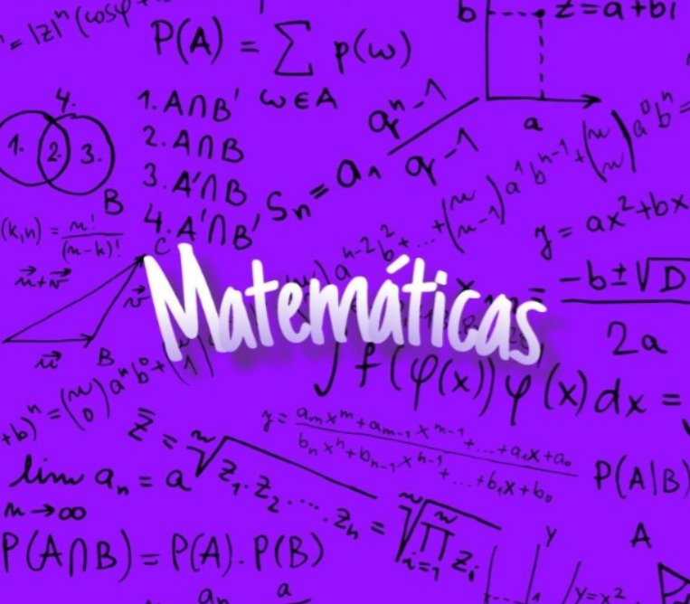

Este portafolio presenta los trabajos, actividades y aprendizajes desarrollados durante el curso de Matemática I. A lo largo del semestre fortalecí conocimientos en cálculo diferencial e integral, aplicando herramientas matemáticas fundamentales para mi formación en Ingeniería de Sistemas.
Ver Trabajos
Universidad: Universidad Nacional de Ingeniería (UNI)
Área de conocimiento: Tecnología de la Información y la Comunicación
Curso: Matemática I
Autora: Genesis Esther Valdivia Aragón
Docente: Mercedes Leonor López
Fecha: 24 de junio de 2026
Presentación del programa, encuadre y repaso de funciones.
Concepto de límite, límites algebraicos y propiedades.
Límites trigonométricos, límites notables y continuidad de funciones.
Definición de derivada y reglas básicas de derivación.
Regla de la cadena, derivación de funciones exponenciales y logarítmicas.
Puntos críticos, máximos, mínimos y puntos de inflexión.
Repaso y evaluación de límites, continuidad y derivadas.
Antiderivadas e integrales inmediatas.
Descomposición de fracciones racionales para integración.
Cálculo de áreas mediante integración definida.
Método del disco para sólidos de revolución.
Curvas y áreas en el sistema de coordenadas polares.
Cálculo de centroides y comprobación gráfica mediante software.
Toca cualquier tarjeta para ver el detalle completo de los ejercicios, capturas y material de apoyo.
Aprendí a aplicar conceptos de cálculo diferencial e integral para resolver problemas matemáticos, interpretar resultados y utilizar herramientas como GeoGebra para comprobar procedimientos de forma gráfica.
Las principales dificultades se presentaron en las integrales por fracciones parciales, integrales trigonométricas y en la comprensión de algunos procedimientos avanzados. La práctica constante permitió mejorar mi desempeño y comprensión de los temas.
Matemática I ha sido una asignatura fundamental para fortalecer el pensamiento lógico, analítico y la capacidad de resolución de problemas. Los conocimientos adquiridos servirán como base para futuras asignaturas de Ingeniería de Sistemas.
Nombre: Genesis Esther Valdivia Aragón
Correo: aragongeva@gmail.com